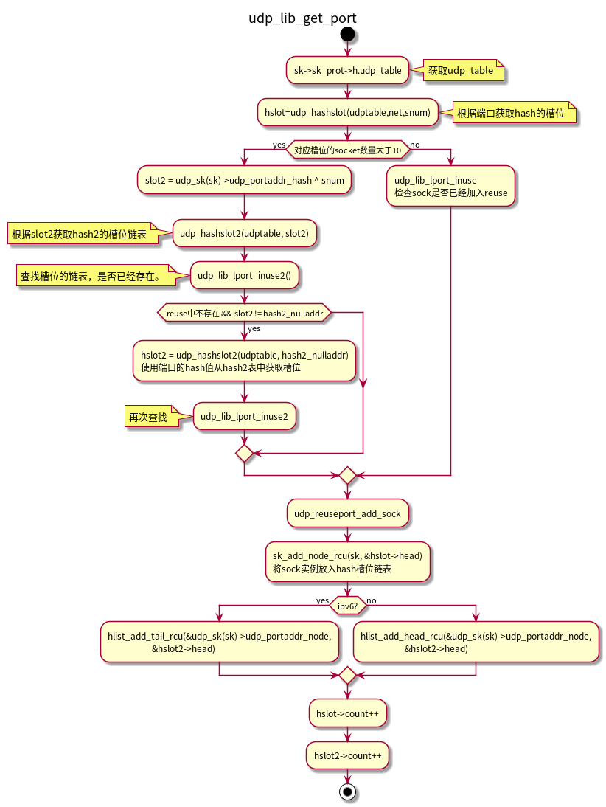

Linux reuseport
Table of Contents
*
1 UDP reuseport
1.1 udp_prot结构
struct proto udp_prot = { .name = "UDP", .owner = THIS_MODULE, .close = udp_lib_close, .connect = ip4_datagram_connect, .disconnect = udp_disconnect, .ioctl = udp_ioctl, .destroy = udp_destroy_sock, .setsockopt = udp_setsockopt, .getsockopt = udp_getsockopt, .sendmsg = udp_sendmsg, .recvmsg = udp_recvmsg, .sendpage = udp_sendpage, .backlog_rcv = __udp_queue_rcv_skb, .release_cb = ip4_datagram_release_cb, .hash = udp_lib_hash, .unhash = udp_lib_unhash, .rehash = udp_v4_rehash, .get_port = udp_v4_get_port, .memory_allocated = &udp_memory_allocated, .sysctl_mem = sysctl_udp_mem, .sysctl_wmem = &sysctl_udp_wmem_min, .sysctl_rmem = &sysctl_udp_rmem_min, .obj_size = sizeof(struct udp_sock), .h.udp_table = &udp_table, #ifdef CONFIG_COMPAT .compat_setsockopt = compat_udp_setsockopt, .compat_getsockopt = compat_udp_getsockopt, #endif .diag_destroy = udp_abort, }
1.1.1 udp_table
/** * struct udp_table - UDP table * * @hash: hash table, sockets are hashed on (local port) * @hash2: hash table, sockets are hashed on (local port, local address) * @mask: number of slots in hash tables, minus 1 * @log: log2(number of slots in hash table) */ struct udp_table { struct udp_hslot *hash; struct udp_hslot *hash2; unsigned int mask; unsigned int log; };


1.1.2 udp_lib_hash
- 计算port hash： hash2_nulladdr
- 计算addr hash： hash2_partial
// @skc_u16hashes: two u16 hash values used by UDP lookup tables #define udp_port_hash inet.sk.__sk_common.skc_u16hashes[0] #define udp_portaddr_hash inet.sk.__sk_common.skc_u16hashes[1] #define udp_portaddr_node inet.sk.__sk_common.skc_portaddr_node udp_sk(sk)->udp_portaddr_hash = hash2_partial;
- udp_lib_get_port
1.1.2.1 udp_lib_get_port
/** * udp_lib_get_port - UDP/-Lite port lookup for IPv4 and IPv6 * * @sk: socket struct in question * @snum: port number to look up * @saddr_comp: AF-dependent comparison of bound local IP addresses * @hash2_nulladdr: AF-dependent hash value in secondary hash chains, * with NULL address */ int udp_lib_get_port(struct sock *sk, unsigned short snum, int (*saddr_comp)(const struct sock *sk1, const struct sock *sk2, bool match_wildcard), unsigned int hash2_nulladdr);
